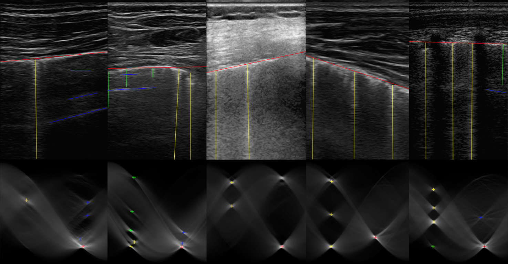

Nantheera Anantrasirichai
This project aims to develop an objective tool to determine fluid overload in children receiving dialysis. B-lines, defined as discrete laser-like vertical hyperechoic reverberation artefacts in lung ultrasounds, have been shown to correlate with extravascular lung water in symptomatic and asymptomatic adults and children on dialysis. Recent studies have shown this technique to be useful in children on dialysis.
We restored line restoration in speckle images by addressing this as a sparse estimation problem using both convex and non-convex optimisation techniques based on the Radon transform and sparsity regularisation. This breaks into subproblems which are solved using the alternating direction method of multipliers (ADMM), thereby achieving line detection and deconvolution simultaneously. An automatic B-line identification method is then proposed, using a simple local maxima technique in the Radon transform domain, associated with known clinical definitions of line artefacts.
Figure below shows B-mode ultrasound image and detected lines (top row) and Radon transform domain representation of the restored B-mode images (bottom row). Red, yellow, blue and green lines represent the pleural lines, B-lines, A-lines and Z-lines, respectively
